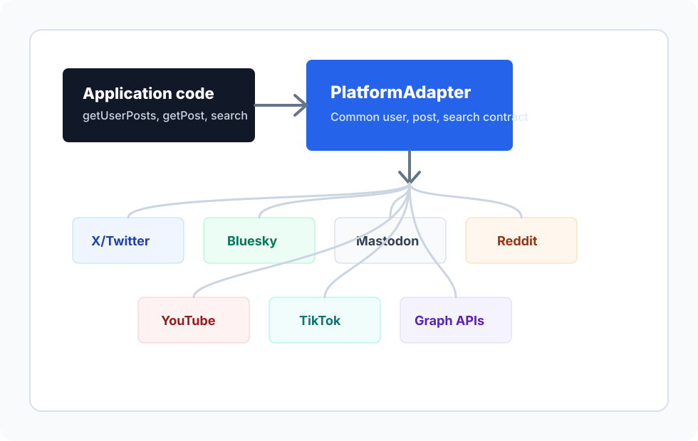

X/TwitterPrimary
GraphQL reads, guest sessions, login flow, session storage, pagination, and transaction ids.
Read X adapter detailsTypeScript SDK for social APIs
Nimbipost gives applications a shared user, post, search, and pagination contract while keeping each platform's authentication, request signing, and API details behind dedicated adapters.

Each adapter can expose its own credentials and edge cases while the application talks to a stable common interface.
GraphQL reads, guest sessions, login flow, session storage, pagination, and transaction ids.
Read X adapter detailsPublic API adapter for profiles, author feeds, post lookup, and search.
Read Bluesky adapter detailsInstance-scoped account, status, and search operations.
Read Mastodon adapter detailsUser submissions, post lookup, and search through OAuth API endpoints.
Read Reddit adapter detailsChannel, video, and search reads with API-key or bearer-token configuration.
Read YouTube adapter detailsAuthenticated user and video-list reads for approved Display API apps.
Read TikTok adapter detailsBot identity and update-backed reads through bot-token credentials.
Read Telegram adapter detailsGraph API profile and thread reads with access token and user id.
Read Threads adapter detailsGraph API profile and media reads with access token and user id.
Read Instagram adapter detailsThe public shape favors generic post terminology, with X/Twitter aliases retained where existing integrations need them. See the full platform adapter documentation for credential and scope details.
import { createPlatformAdapter } from 'nimbipost';
const platform = createPlatformAdapter('x', {
authToken: process.env.X_AUTH_TOKEN,
});
const userId = await platform.getUserId('barton6026');
const posts = await platform.getUserPosts(userId, { total: 100 });
const post = await platform.getPost('1234567890');
const results = await platform.search('BTC');
const following = await platform.getFriends?.(userId, {
following: true,
total: 20,
});
// X/Twitter compatibility aliases remain available:
const tweets = await platform.getUserTweets?.(userId);Non-Node services can call Nimbipost over HTTP while the Gateway keeps platform credentials, sessions, request signing, and pagination inside the Node process. The HTTP Gateway guide covers routes and deployment shape.
npm run build
X_AUTH_TOKEN=your_auth_token NIMBIPOST_PORT=4334 npm run start:gateway
GET /health
GET /v1/:platform/users/:username
GET /v1/:platform/users/:username/posts?total=20
GET /v1/:platform/posts/:postId
GET /v1/:platform/search?q=BTCThe project separates shared interface decisions from the platform details that change most often.
Use posts, users, search, and pagination as the common application-facing language.
Keep auth headers, query shapes, request clients, and response normalization per platform.
Inject `X-Client-Transaction-Id` with the local transaction generator integration.
Bootstrap `auth_token` sessions with the matching `ct0` CSRF header for authenticated reads.
Use lightweight official-API adapters as extension points for deeper platform coverage.
Architecture
`createPlatformAdapter` returns the same public interface for each supported platform. The adapter owns service URLs, credentials, request transport, pagination handling, and platform-specific fallbacks. For X/Twitter-specific session handling, open the X/Twitter adapter page.
Business code asks for users, posts, searches, and paginated results.
Adapters are selected by platform name and configured with platform-specific options.
Each implementation maps the common method to the platform's current endpoint and response shape.
The SDK is ready for local development and adapter expansion. Production use still depends on each platform's access policies and credentials.
This page is plain HTML, CSS, and SVG under `docs/`. Configure GitHub Pages to publish the repository's `/docs` folder and it can be served without a build pipeline. Browse the supported platform adapters or the HTTP Gateway documentation.